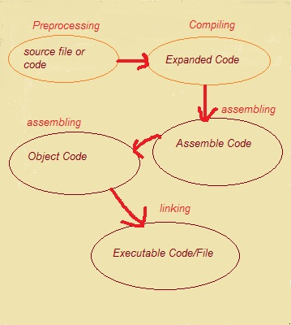
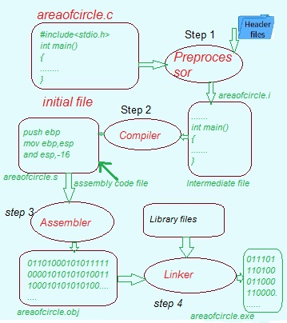

Step by Step Compilation process in C
Compilation Process involve Following Steps
Preprocessing
Compiling
Assembling
Linking

a. Pre-Processing:
Pre-processing is the first step in the compilation process in C performed using the pre-processor tool (A pre-written program invoked by the system during the compilation). All the statements starting with the # symbol in a C program are processed by the pre-processor, and it converts our program file into an intermediate file with no # statements. Under following pre-processing tasks are performed :
i. Comments Removal:
Comments in a C Program are used to give a general idea about a particular statement or part of code actually, comments are the part of code that is removed during the compilation process by the pre-processor as they are not of particular use for the machine. The comments in the below program will be removed from the program when the pre-processing phase completes.
/* This is a
multi-line comment in C */
#includel<stdio.h>
int main()
{
/* this is a single-line comment in C */
return 0;
}
ii. Macros Expansion:
Macros are some constant values or expressions defined using the #define directives in C Language. A macro call leads to the macro expansion. The pre-processor creates an intermediate file where some pre-written assembly level instructions replace the defined expressions or constants (basically matching tokens). To differentiate between the original instructions and the assembly instructions resulting from the macros expansion, a '+' sign is added to every macros expanded statement.
Macros Examples:
Defining a value
#define G 9.8 Defining an expression
#define SUM(a,b) (a + b)
iii. File inclusion:
File inclusion in C language is the addition of another file containing some pre-written code into our C Program during the pre-processing. It is done using the #include directive. File inclusion during pre-processing causes the entire content of filename to be added to the source code, replacing the #include directive, creating a new intermediate file.
Example: If we have to use basic input/output functions like printf() and scanf() in our C program, we have to include a pre-defined standard input output header file i.e. stdio.h.
#include <stdio.h>
iv. Conditional Compilation:
Conditional compilation is running or avoiding a block of code after checking if a macro is defined or not (a constant value or an expression defined using #define). The preprocessor replaces all the conditional compilation directives with some pre-defined assembly code and passes a newly expanded file to the compiler. Conditional compilation can be performed using commands like #ifdef, #endif, #ifndef, #if, #else and #elif in a C Program. Example :
1. Printing the GRAVITY macro, if GRAVITY macro is defined, else printing Not Defined and ending the conditional compilation block with an #endif directive.
#include <stdio.h>
/* if we uncomment the below line, then the program will print GRAVITY in the output.*/
// #define GRAVITY 18
int main()
{
/* if `GRAVITY` is defined then print the `GRAVITY` else print "Not Defined"*/
#ifdef GRAVITY
printf("Gravity is %d", GRAVITY);
#else
printf("Not Defined");
#endif
return 0;
}
Explanation:
#ifdef directive checks if the macro GRAVITY is defined or not, and as we have commented the #define statement the #ifdef GRAVITY block of code will not execute and control flow will move to the #else block and Not Defined will be printed on the output screen, #endif ensures that the conditional compilation block ends there.
Now let's see the below figure that shows how a pre-processor converts our source code file into an intermediate file. Intermediate file has an extension of .i, and it is the expanded form of our C program containing all the content of header files, macros expansion, and conditional compilation.
b. Compiling:
Compiling phase in C uses an inbuilt compiler software to convert the intermediate (.i) file into an Assembly file (.s) having assembly level instructions (low-level code). To boost the performance of the program compiler translates the intermediate file to make an assembly file.
Assembly code is a simple English-type language used to write low-level instructions (in micro-controller programs, we use assembly language). The whole program code is parsed (syntax analysis) by the compiler software in one go, and it tells us about any syntax errors or warnings present in the source code through the terminal window.
The below image shows an example of how the compiling phase works.
C. Assembli
ng:
To understand Assembling First we need to understand What is Assembler?
Assembler:-An assembler is a program that takes basic computer instructions and converts them into a pattern of bits that the computer's processor can use to perform its basic operations. Some people call these instructions assembler language and others use the term assembly language.
It takes basic Computer commands and converts them into Binary Code that Computer's Processor can use to perform its Basic Operations.
In this assembling level the Assembly level Code(.s)file is converted to machine code(in binary or hexadecimal)
using assembler.
The file generated in this step has the same name as the assembly file known as object file with extension .obj on windows and .oin UNIX operating System.
following diagram shows how the assembling step works. areaofcircle.s is translated to areaofcircle.o
has same name but different Extension.
d. Linking:
What is Linker in c programing?
Linker:-A linker is an important utility program that takes the object files, produced by the assembler and compiler, and other code to join them into a single executable file. There are two types of linkers, dynamic and linkage.
What is Linking in C programing?
Linking:
Linking defined as a process of including library files into the program. library files are the files predefined files that has the definition of functions in the machine language, these file have an extension .lib
The linking process generates an executable file with an extension of .exe in DOS and .out in UNIX OS.
Below image shows how the linking works.
Compilation Flow with diagram
Let us understand the compilation process in detail with the help of following digaram.

Here in above given fig. we Have C Program file areaofcircle with an extension of .c i.e.areaofcircle.c file.
Step 1: is preprocessing of header files, all the statements starting with # hash symbol and comments are replaced/removed during the pre-processing with the help of a pre-processor. It generates an intermediate file with .i file extension i.e. a areaofcircle.i file.
Step 2: is a compilation of areaofcircle.i file. Compiler translates the areaofcircle.i file to areaofcircle.s with assembly level instructions i.e. low-level code.
Step 3: assembly-level code instructions are converted into machine-understandable code (binary/hexadecimal form) by the assembler. The file generated is known as the object file with an extension of .obj/.o i.e. areaofcircle.obj/areaofcircle.o file.
Step 4: Linker is used to link the library files with the object file to define the unknown statements. It generates an executable file with .exe/.out extension i.e. a areaofcircle.exe/areaofcircle.out file.
Next, we can run the areaofcircle.exe/areaofcircle.out executable file to get the desired output on our output window, i.e., Hello World!.